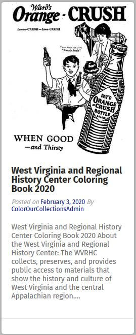

I stumbled upon the #ColorOurCollections page as I was browsing Washington State's Coronavirus Response site for information on facemasks. It was linked as a resource to help support children at home during the school closures.
#ColorOurCollections, launched by The New York Academy of Medicine (NYAM), is an annual coloring festival hosted on social media. The event brings together institutions from around the world and allows participants free access to coloring content. Coloring books remain accessible year-round on NYAM's website.
#ColorOurCollections page launched by The New York Academy of MedicineI thought this would make a good site to analyze for usability and decided to base my results on the following criteria:
- Ease of Use
- Information Facilitation
- Look & Feel Appeal
- Site Organization
Ease of Use
I wasn't quite sure what to expect when I first accessed the page but I knew I was looking for coloring content. From the homepage, it wasn't inherently clear where the coloring pages where but after some clicking around, I quickly realized that each of the post containers held a link to a coloring book. The image in each of the posts provided a preview of what to expect from the coloring book.
 West Virginia and Regional History Center Coloring Book 2020 postClicking on the link opened up the page to the collection where the full coloring book could be viewed, downloaded or printed. Overall, I found the website to be very user-friendly. There wasn't much effort expended in thinking about what was what and how to use it.
Information Facilitation
With information facilitation, I wanted to see how quickly I could find information. I decided to do a search for cats to see if I could find anything for a cat-loving kid. The search results brought up 4 pages of content, which seemed promising, but upon further inspection, many of the results included collections that simply had the word "cat" somewhere in them, such as: "Yucatan", "Education", "Cataloging", "Dedicated" and many other "cat" words.
Yucatan coloring pages.I ran a search for a few other keywords including "kitten" but wasn't able to find any cat related content. A quick search for "New York" content, on the other hand, procured a number of coloring pages though. I felt that information facilitation was fine overall. My unsuccessful cat search is likely due to the fact that this site is geared more towards educational and historical art, not kittens.
Look & Feel Appeal
The look and feel of the page seems to work well, however, the dropdown on the navigation menu could be viewed poorly in accessibility terms. There isn't much setting it apart from the content below so this could make it difficult for some users to see.
Navigation dropdown options were difficult to differentiate from other page content.I would suggest using contrasting colors here to provide a clear separation between the navigation bar, dropdown menu, and the main content, which are all similarly colored at the moment.
Site Organization
The organization of the site was self-evident after a teeny bit of thought. Since the page is mainly focused on providing coloring content to visitors, it's probably safe to say that a lot of time is spent in the coloring collections section. This was easy to find once I made the connection between "Participating Institutions" and "coloring books".
Images from New York Academy of Medicine #ColorOurCollections.